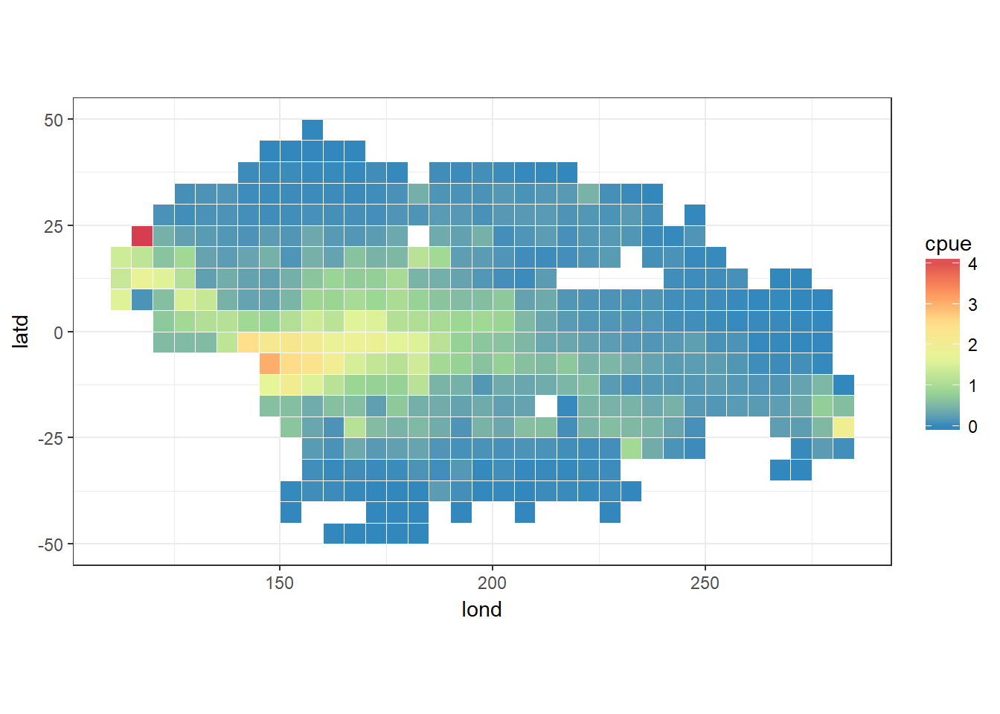
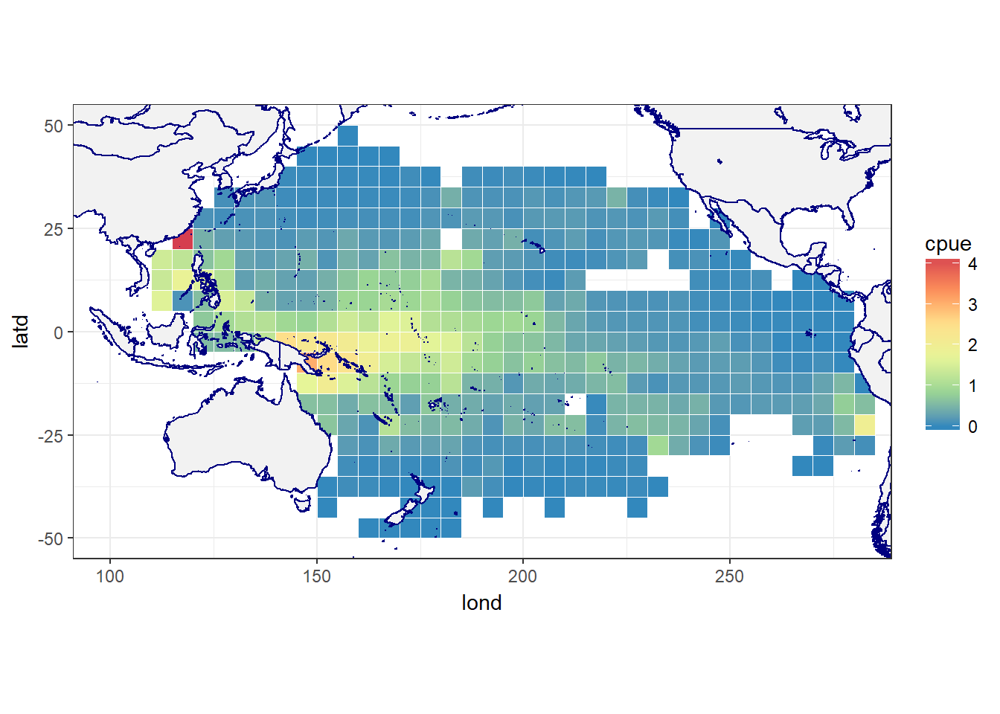

library(tidyverse)
options(stringsAsFactors=FALSE) # turn-off automatic factors
library(maps)
library(mapdata)
library(maptools)
load('Datasets/Pacific-region-to-keep.RData', verbose=TRUE)## Loading objects:
## reg2keepIn R data objects have extension .RData, then can be saved with save() and loaded back in R with load()
load('Datasets/lbest-sample.RData', verbose=TRUE) #lbest## Loading objects:
## lbestyft80 <- lbest %>% filter(yy==1980) %>%
group_by(lond, latd) %>%
summarise(catch=sum(yft_no),
effort=sum(hhooks)) %>%
mutate(cpue=catch/effort)
head(yft80)## # A tibble: 6 x 5
## # Groups: lond [2]
## lond latd catch effort cpue
## <dbl> <dbl> <dbl> <dbl> <dbl>
## 1 112. 7.50 15077. 9469. 1.59
## 2 112. 12.5 43255. 32155. 1.35
## 3 112. 17.5 28845. 20460. 1.41
## 4 118. 7.50 3. 24.0 0.125
## 5 118. 12.5 72636. 40392. 1.80
## 6 118. 17.5 90347. 73139. 1.24The ggplot function to do heatmaps is called geom_tile()
ggplot() +
geom_tile(data=yft80, aes(x=lond, y=latd, fill=cpue), colour='white') +
theme_bw() +
coord_equal() +
scale_fill_distiller(palette='Spectral')
world2Hires is a high resolution database of continent outlines The 2 means it’s the Pacific-centred version
all_states <- map_data('world2Hires')
reg2keep <- c(reg2keep, 'Vietnam')
states <- all_states %>% filter(region %in% reg2keep)Now that I have formatted by continent dataset, I can add it as a layer to ggplot:
ggplot() +
geom_tile(data=yft80, aes(x=lond, y=latd, fill=cpue), colour='white') +
geom_polygon(data=states, aes(x=long, y=lat, group=group), fill='grey95', colour='navy') +
theme_bw() +
coord_equal(xlim=c(100,280), ylim=c(-50,50)) +
scale_fill_distiller(palette='Spectral')
Copyright © 2018 Pacific Community. All rights reserved.